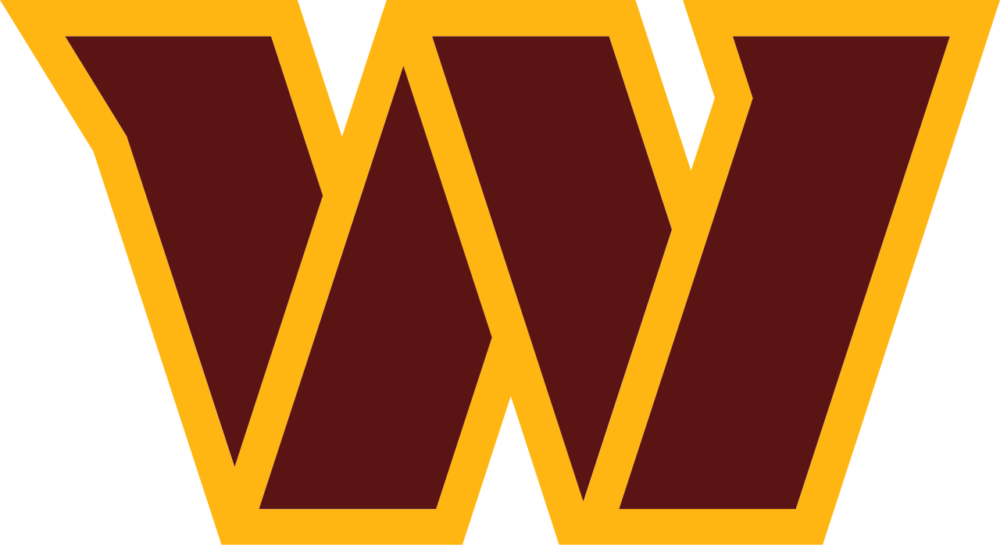

Washington Commanders
The Washington Commanders are a professional American football team based in the Washington D.C. metropolitan area.
Here's a look at the team logo:

About the Team
The Commanders compete in the National Football League (NFL) as a member of the National Football Conference (NFC) East division.The Commanders play their home games at Northwest Stadium in Landover, Maryland, and have a headquarters and training facility in Ashburn, Virginia. The team will begin playing at the New Stadium at RFK Campus in 2030. The Commanders have played more than 1,300 games and have won more than 600. Washington was among the first NFL franchises with an original fight song, "Hail to the Commanders", which has been played by their marching band after home game touchdowns since 1937. The franchise won NFL championships in 1937 and 1942 and Super Bowls XVII (1982), XXII (1987), and XXVI (1991). The Commanders have finished a season as league runner-up six times, losing the 1936, 1940, 1943, and 1945 title games and Super Bowls VII (1972) and XVIII (1983). Washington has 14 NFC East division titles and 26 total playoff appearances.
History
The franchise was founded by George Preston Marshall as the Boston Braves in 1932, were renamed the Boston Redskins the following year, and became the Washington Redskins upon moving to Washington, D.C., in 1937. The Redskins name and logo drew criticism for decades before they were retired in 2020 as part of a wave of name changes during a period of racial unrest in the United States. The team played as the Washington Football Team for two seasons before rebranding as the Commanders in 2022.
Primary Colors
- Burgundy
- Gold